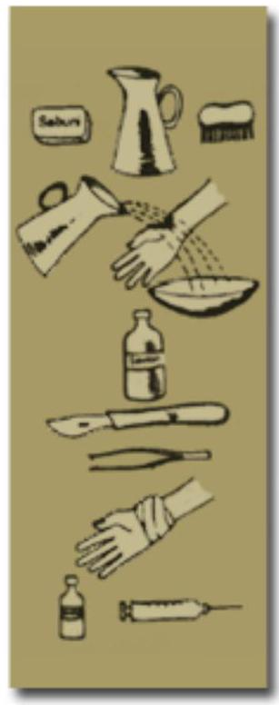

SECTION 8: DISEASES OF CONTACT WITH ANIMALS OR ANIMAL PRODUCTS
Introduction
In this section you will look at infectious diseases which are transmitted between animals and humans.
Objectives
By the end of this section you will be able to:
- List three diseases transmitted through contact with animals or animal products
- Describe the management of zoonotic diseases namely; anthrax, rabies and brucellosis
- Describe the control measures of zoonotic diseases
Diseases from Contact with Animals
What do you call diseases that are transmitted between animals and humans?
Diseases that are transmitted between infected vertebrate animals (animals with a backbone) and humans are called zoonotic.
In some of these diseases, humans are usually the last in the transmission cycle or the final host as in the case of hydatidosis, unless of course the person's body is eaten by a predator. Similarly in other diseases like rabies and brucellosis, the disease transmission ends with mankind, though possibilities of further transmission can occur if for example, a rabid patient bites another person, or a patient with brucellosis accidentally transmits it to another person.
Zoonoses are transmitted between animals and humans through the following means:
Vectors
These include:
- The rat flea which transmits plague among rats and other rodents
- The tsetse fly which transmits trypanosomiasis among game animals and nagana in cattle
- Mosquitoes which transmits yellow fever among monkeys
Ingestion of Contaminated Material
Ingestion of meat or dairy products from sick animals, leading to diseases such as:
- Anthrax (meat from cattle and game animals)
- Brucellosis (milk from infected cattle)
- Taeniasis (milk and meat from infected cattle and pigs)
Animal Bites
Bites, resulting in diseases such as:
- Rabies (from rabid domestic and wild dogs or foxes)
Direct Contact with Infected Animal
Close contact resulting in diseases such as:
- Hydatidosis (close contact with infected domestic dogs or other carnivores)
- Cutaneous anthrax (contact with infected cattle or their products)
In this section you will cover anthrax, rabies and brucellosis, looking at their mode of transmission, clinical picture, diagnosis, management and prevention.
Anthrax
Anthrax is an acute bacterial disease of herbivores (plant eating animals). However, it occasionally also infects human beings especially those who process hides, skins and wool or work in slaughterhouses. Anthrax is caused by a rod shaped bacteria (bacilli) called bacillus anthracis.
The disease can occur in large numbers among cattle (epizootic), especially during drought and flooding when they are moved from one place to another. In humans, this infection takes various forms depending on the route of entry.
There is anthrax of the skin which affects people who handle cattle, anthrax of the lungs which occurs in people working with infected wool; and anthrax of the bowels which affects families who eat the meat of dead animals.
The type of disease caused depends on the route of entry of the bacillus or its spores. In animals, anthrax causes a fever which is followed by septicaemia and death. Vultures, which feed on the dead animal can spread the spores.
Mode of Transmission
The bacillus anthracis forms spores when exposed to the air.
The spores can survive for years in the soil even under harsh weather conditions. The spores enter the animals orally (through the mouth or ingestion).
The body of a sick or dead animal contains millions of anthrax bacilli. These bacilli are shed through animal urine, droppings, saliva milk and blood.
If any of these body fluids are touched or the meat of an infected animal eaten, a person becomes infected with anthrax.
Clinical Features
The clinical features depend on the route of entry of the anthrax bacillus.
Skin or cutaneous anthrax presents with a malignant pustule with a black necrotic centre. The wound is usually painless and has swollen edges. Skin anthrax has low mortality.
Respiratory tract anthrax on the other hand has a high mortality rate and presents with severe respiratory distress and shock.
Digestive tract anthrax is characterised by fever, sepsis, watery diarrhoea and vomiting.
Diagnosis
The diagnosis of anthrax is made by taking a specimen (fluid from vesicles, sputum or stool) for a culture to confirm gram-positive rods.
Management
Bacillus anthracis responds to penicillin and most other antibiotics.
Patients with anthrax of the respiratory tract need respiratory support and oxygen therapy in a high dependence care unit.
Those with anthrax of the digestive tract may need fluid replacement due to diarrhoea and vomiting.
Prevention and Control
Although the main responsibility for the prevention and control of anthrax falls on the veterinary department, you as a health worker also have a role to play.
You should ensure that all meat offered for sale is inspected and educate the community on proper disposal of all infected animals. The carcasses must be burnt or buried two meters deep in the ground in calcium oxide powder (quick lime).
Other measures include annual vaccination of cows at risk, proper disinfection of hides and skins, and vaccination of members of the community who are at risk of getting anthrax.
Rabies
Rabies is a serious viral disease of canines which is incidentally transmitted to humans by the bite of a rabid animal. It is caused by a virus known as lassa virus type I. The disease is of public health importance because it has a case fatality rate of 100\%. If a patient is not treated immediately after the bite, once the clinical signs appear it is too late.
Rabies is found all over the world and in canines. It occurs all the time and in great numbers (enzootic and epizootic). In human beings, rabies is a zoonotic disease, and humans usually do not transmit it any further.
The main reservoirs of lassa virus type I are felines, hyenas, and mongoose.
Mode of Transmission
The rabies virus is transmitted to humans through the saliva of an infected animal such as a dog or cat. This happens when humans get bitten by a rabid animal or when its saliva comes into contact with the mucous membranes or open wound of a person.
The main reservoirs of the disease are wild animals such as mongooses, jackals and hyenas. These wild animals infect domestic animals including cattle, donkeys and horses, which in turn infect mankind.
In North and South America, rabid bats have been known to infect humans. All warm blooded animals are susceptible to rabies.
Clinical Features
The incubation period of rabies ranges from two weeks to a year, with an average of two to three months. The length of the incubation period is influenced by the following factors:
- The size of the bite - the deeper the bite the shorter the incubation period
- Distance of the wound from the brain - the nearer the wound is to the brain the shorter the incubation period
- Type of wound - if the wound is big with extensive tissue damage the shorter the incubation period
Write down three symptoms of rabies infection.
The earliest symptoms usually consist of increasingly severe pain in the bite wound, depression, irritability, nausea, sore throat, headache and loss of appetite.
Later, two clinical presentations emerge:
Furious rabies whereby the infected person develops convulsions, intense fear of death and irrational excitement, which alternates with periods of alertness and calmness. The patient is also unable to tolerate noise, bright light and cold drought (aerophobia - fear of cold air). There is increased reflexes, muscle spasms, excessive sweating, dilatation of pupils, excessive salivation and lacrimation. The patient develops intense hydrophobia (fear of water) because of the intense pain experienced when swallowing water due to spasms of the pharyngeal muscles. This stage is also known as the 'furious' rabies stage and it lasts for two to three days and sometimes for five to six days. Death usually occurs due to cardiac or respiratory failure during a convulsion.
The next stage is the paralytic rabies stage which is characterised by paralysis of muscles causing paraplegia, quadriplegia and coma. Patients who reach this stage do not survive for more than a week.
Diagnosis
Diagnosis of rabies is made if a person is bitten by a dog with abnormal behaviour and without any provocation. In addition the presence of negli bodies in the brain of a suspected animal should confirm the disease.
Management
There is no cure for rabies once the disease has started. It is however possible to prevent it from reaching that stage by doing the following:
Post Bite Prophylaxis
Immediately someone is bitten you should give first aid treatment of the bite with the aim of removing as much virus as possible. This involves immediate flushing of the wounds and scratches preferably with running water and washing the surrounding skin with a lot of soap and water. Puncture wounds should be irrigated with a sterile catheter using methylated spirit and povidone. lodine is also virucidal and may be used to clean the wound.
Bite wounds should not be sutured immediately to prevent more traumas from the suturing needle, which will increase the areas for viral entry into the body tissue. Suturing may be done 24 to 48 hours after the bite using very few sutures under the cover of anti-rabies serum locally.
Anti-Rabies Vaccine
This is a very safe and effective treatment following a rabid animal bite.
The vaccine HDCV (Human Diploid cells tissue Culture Vaccine) is administered in six doses sub-cutaneously as follows:
1 ml immediately after exposure (day 0), 1 ml on day 3, 1 ml on day 7, 1 ml on day 14, 1 ml on day 30, 1 ml on day 90.
Other Drugs
In order to prevent wound infection and tetanus you should give the patient broad spectrum antibiotics.
Note: The animal, which inflicted the bite, should be quarantine and observed for ten days from the day of the bite. If it shows signs of rabies it should be killed anditshead removed and sent under refrigeration for rabies examination.
Prevention and Control
Rabies is a notifiable disease. It is very important to give immediate first aid to a person who has been bitten by a suspect animal.
In addition, you should educate the community members on the importance of immunising their domestic dogs and cats every three years and eliminating all stray dogs and cats.
- Wash out the wound with plenty of water, soap and a brush
- Rinse again with plenty of water
- Then apply disinfectant
- Do not stitch the wound, but apply a swab and a slight compression bandage to stop the bleeding
- Give tetanus toxoid vaccination
Note
Take a very thorough history. Refer to hospital for rabies immunisation if:
- Known animal becomes ill and dies
- Animal unknown and disappears
- Animal looked rabid
- Dead animal brought
Brucellosis
Brucellosis is a zoonotic disease or disease of animals. It is caused by a bacteria called brucella melitensis in goats, sheep and camels, brucella abortus in cattle and brucella suis in pigs. All these bacteria however can be transmitted to mankind causing brucellosis.
Distribution
Brucellosis has a worldwide distribution, predominantly in rural areas among pastoral communities. It is also an occupational health hazard of farmers, veterinarians, abattoir workers and butchers. Transmission
Brucellosis is transmitted through ingestion of unpasteurised milk or milk products such as cheese. It can also be transmitted by contact with blood, urine, tissues, through splashing of amniotic fluid or milk on the conjunctiva and blood transfusion.
Clinical Presentation
The incubation period takes about two to four weeks. Initially the signs and symptoms are non-specific and include the following:
- Headaches
- Fever
- Weakness
- Anorexia
- Rigors
- Night sweats
- Constipation
Patients may also complain of pain in the large joints like the hips and knees although any other joint may be affected. Hepatomegally, splenomegally and lymphadenopathy may also be present. If untreated, the disease can continue for many months and the patients may become depressed.
Diagnosis
A serological diagnosis of brucellosis can be made by doing an agglutination test in dilutions. A level of 1:160 or above is associated with the infection. Blood cultures rarely give positive results but a bone marrow aspirate culture gives better yields of up to 90\%. Full haemogram - normochromic, normocytic anaemia, neutropenia and lymphocytosis is common.
Treatment
The treatment of brucellosis is doxycycline 200 mg daily for 14-21 days and cotrimoxazole tabs 2 bd . for 14-21 days.
Prevention
You should educate the community and especially farmers on the importance of boiling or pasteurising milk.
Animal handlers and those at special risk should be advised to take extra precautions.